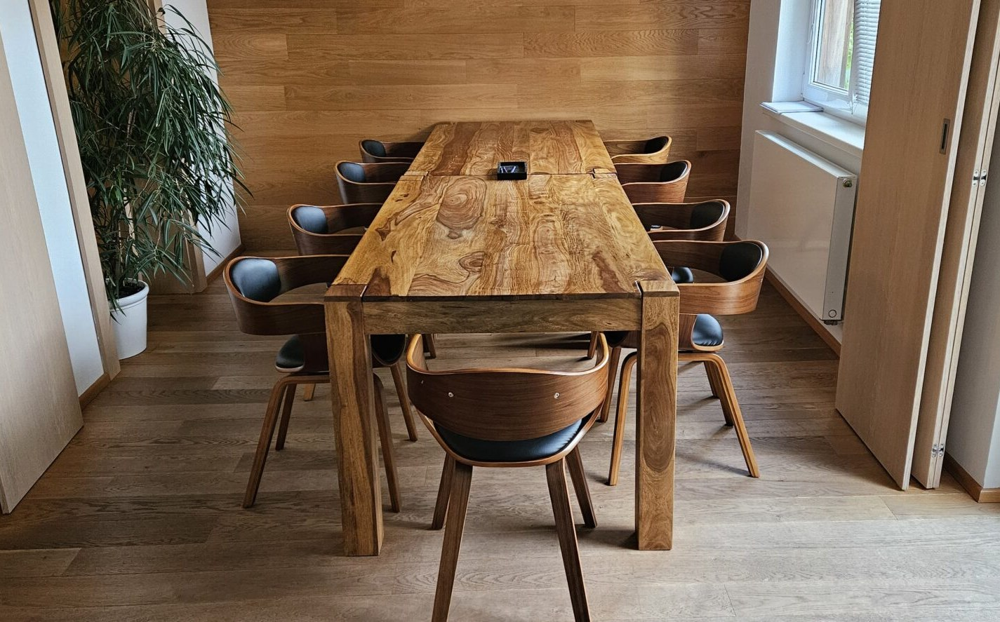

Akvizice
Úspěšná akvizice výrobní společnosti v Polsku
Komplexní právní podpora od due diligence po finální uzavření transakce.
Akvizice
Komplexní právní podpora od due diligence po finální uzavření transakce.
Klient chtěl převzít výrobní společnost v Polsku a potřeboval mít jistotu, že kupuje firmu bez skrytých právních rizik. Transakce zahrnovala polské i české právo a jednání se dvěma stranami v různých jazycích.
Transakce byla uzavřena v plánovaném termínu. Klient převzal společnost s přehledem o rizicích a se smluvní ochranou pro případy, které due diligence odhalila.
